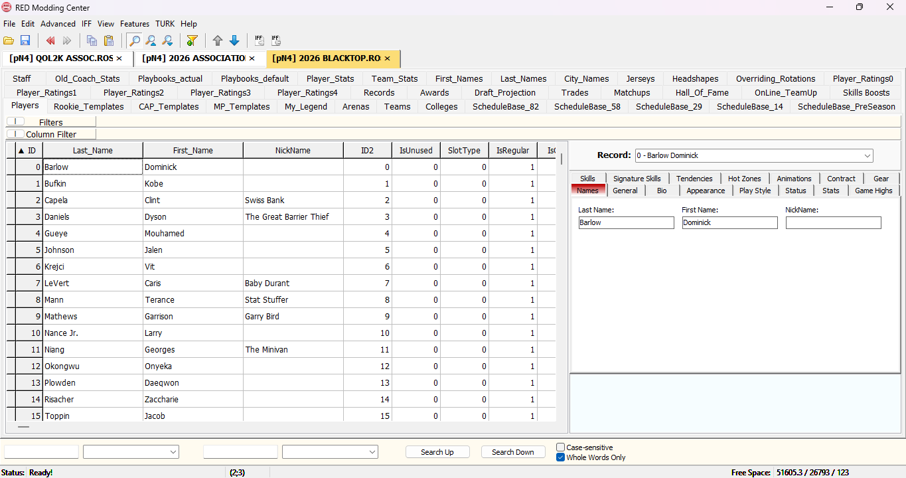
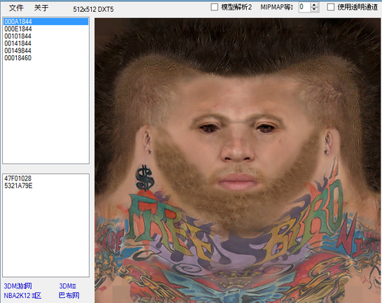
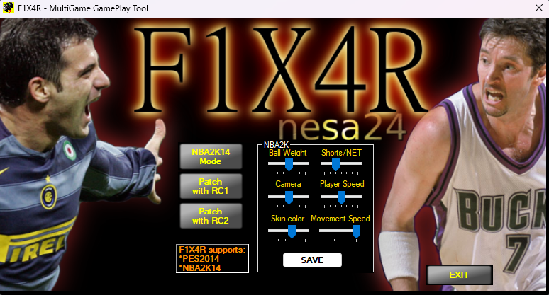
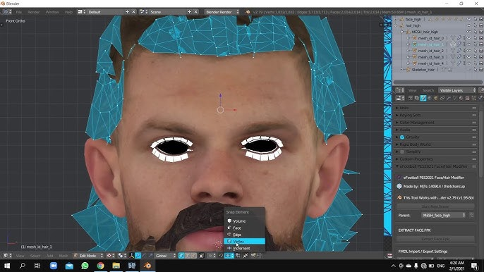
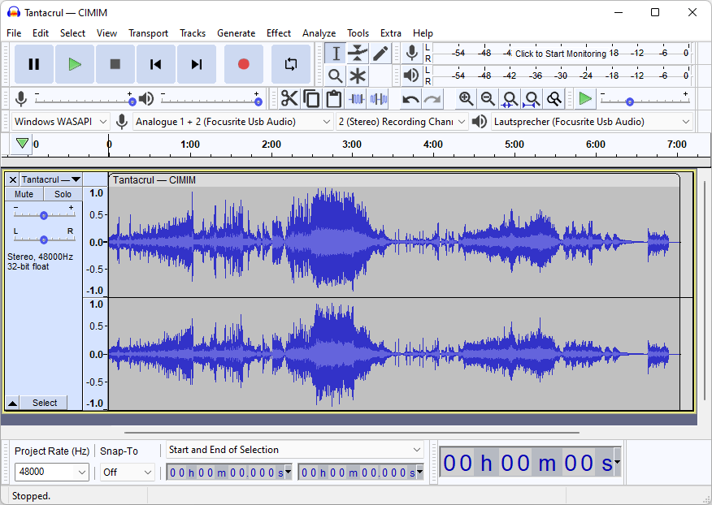
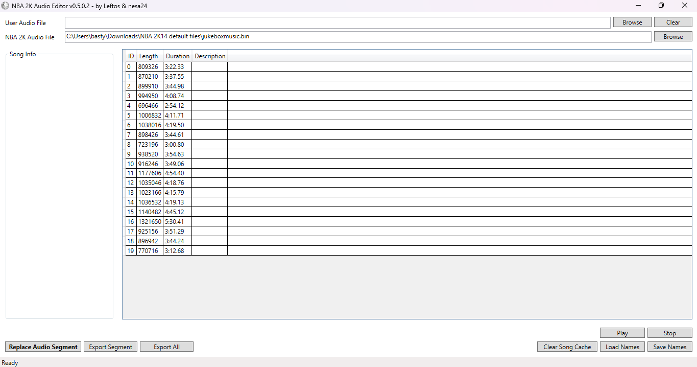
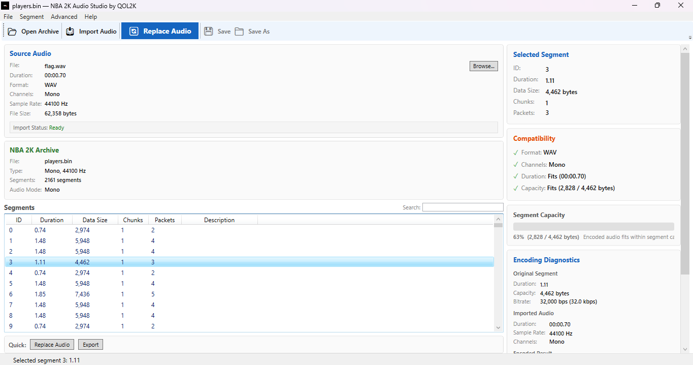
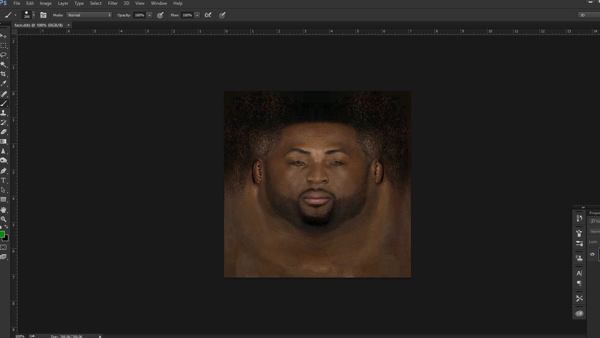
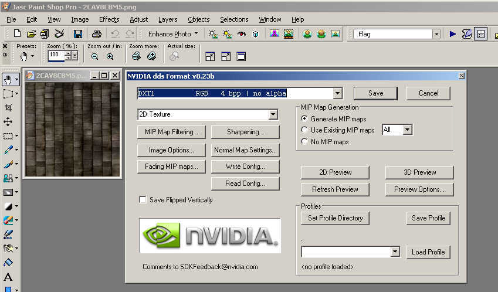

Home / Tools
NBA 2K14 Modding Tools
A collection of software and utilities used by the NBA 2K14 modding community to create rosters, cyberfaces, courts, jerseys, audio modifications, presentations, and other game enhancements.

RED MC
The primary roster editing tool for NBA 2K14. RED MC allows users to modify players, teams, contracts, ratings, tendencies, accessories, cyberface assignments, draft classes, and many other roster-related elements.

3DM Mod Tool
A file archive editor used to open and modify NBA 2K14 IFF files. Commonly used for extracting and importing textures, models, uniforms, courts, portraits, and other game assets.

F1X4R
An advanced executable patching utility for NBA 2K14. F1X4R allows modders to modify game-level behavior by editing values and functions within the executable, making it possible to implement features, remove limitations, apply gameplay fixes, and support custom modifications that cannot be achieved through traditional roster or asset editing tools.

Blender
A professional 3D modeling and rendering software widely used by NBA 2K14 modders for creating and editing cyberface models, accessories, and custom 3D assets.

Audacity
A free audio editing software used for recording, editing, cleaning, and exporting sound files. Frequently used for creating custom arena sounds, commentary projects, and other audio modifications for NBA 2K14.

NBA 2K Audio Editor
A specialized utility designed to extract, preview, organize, and replace NBA 2K14 audio files. Commonly used for commentary mods, presentation packs, arena sounds, and custom audio projects.

QOL2K Audio Studio
A custom QOL2K utility developed to simplify NBA 2K14 audio modding workflows. Designed to help modders manage, organize, and prepare audio assets more efficiently for use in NBA 2K14 projects.

Photoshop 2023
Industry-standard image editing software used by NBA 2K14 modders for creating, editing, and optimizing textures, cyberfaces, portraits, jerseys, courts, and other graphical assets.

DDS Plugin for Photoshop
A plugin for Adobe Photoshop that enables opening, editing, and saving DDS texture files. Essential for NBA 2K14 modders working with compressed game textures including cyberfaces, uniforms, courts, and other DDS-format assets.
Why These Tools?
NBA 2K14 continues to have one of the most active modding communities in sports gaming. These tools form the foundation of the development process used to create custom rosters, cyberfaces, jerseys, courts, scoreboards, presentations, audio enhancements, and many other modifications that keep the game alive today.